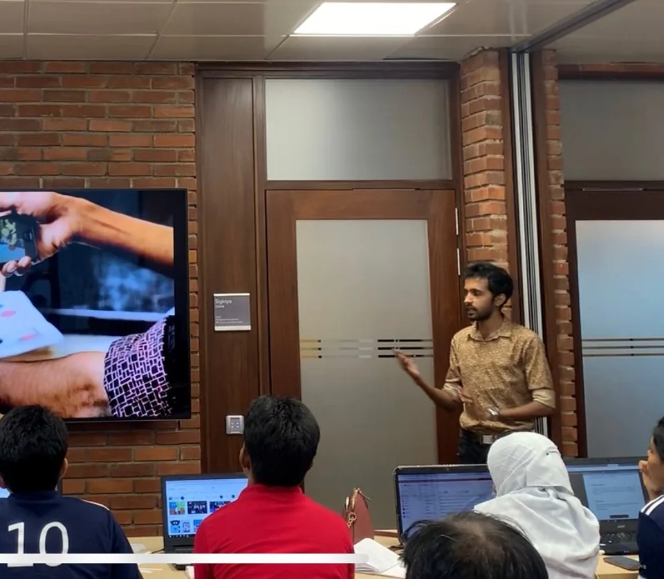

Teaching p. 04
04
Yoobee · Christchurch & Auckland
Teaching
I teach on the Master of Business Informatics programme and supervise master's theses. I've also put 40 of my lessons online. They're free and you don't need an account.